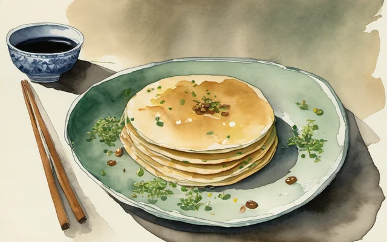
立春
春饼
薄饼卷上豆芽、韭菜、鸡蛋，一口咬住整个春天。
不时不食
“不时不食”是中国人最朴素的饮食智慧。什么时候吃什么， 节气早就替我们安排好了——顺时而食，才吃得出季节的味道。
十二样时令
从立春的春饼到冬至的饺子，每一样都长在它该出现的时节里。

薄饼卷上豆芽、韭菜、鸡蛋，一口咬住整个春天。
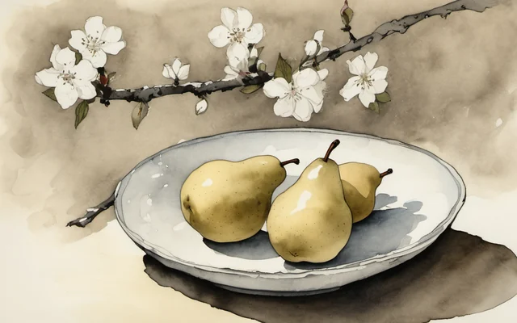
惊蛰吃梨，是老辈人的讲究：春燥渐起，咬一口清甜的梨，润喉也润心。
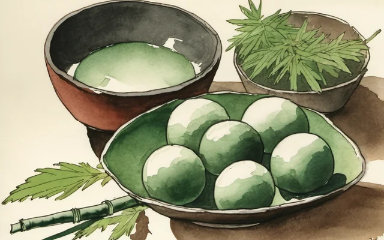
艾草汁揉进糯米粉，包上豆沙，蒸出来绿得发亮。
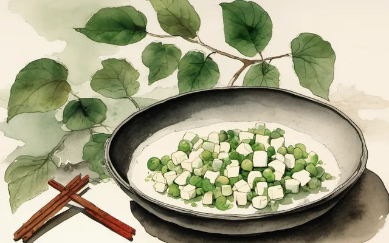
“雨前香椿嫩如丝”，谷雨前后的香椿最鲜，拌豆腐是一绝。
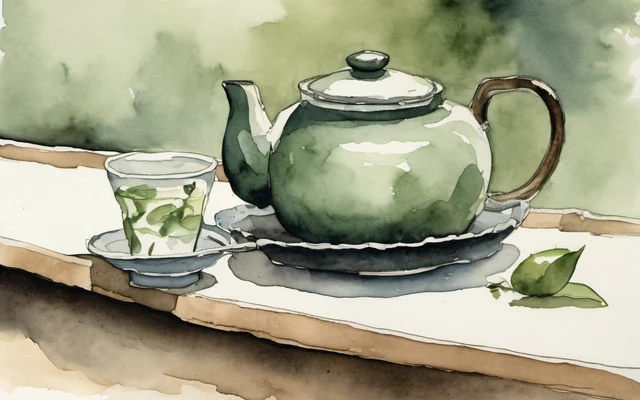
谷雨前采的茶叫“雨前茶”，芽叶肥嫩，泡出来清亮回甘。
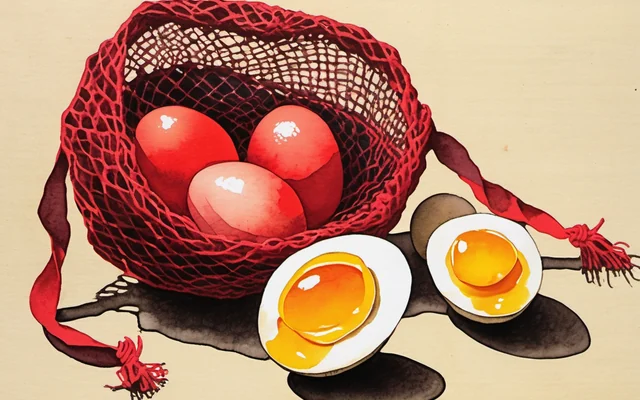
红茶或核桃壳煮蛋，装进彩线网兜，挂在胸前。
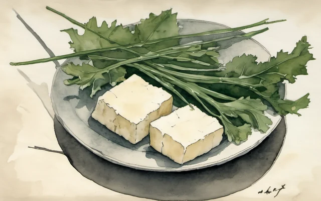
“小满之日苦菜秀”，初夏湿热，一盘凉拌苦菜，微苦回甘，正合时令。
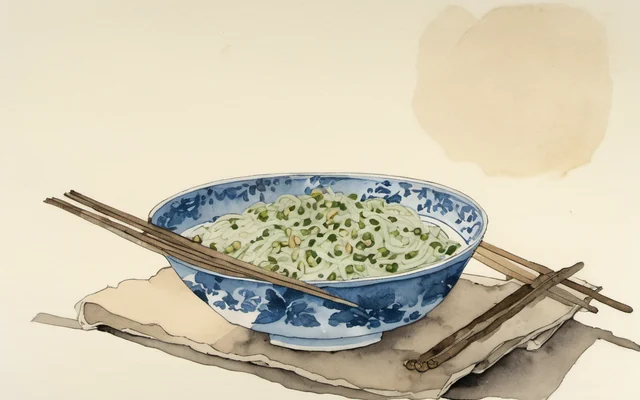
“冬至饺子夏至面”，一碗过水凉面，消暑又开胃。
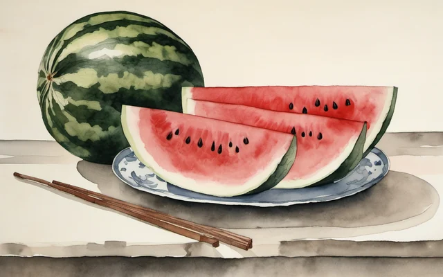
立秋啃秋，抱着西瓜啃掉最后一口暑气，也给夏天收个尾。
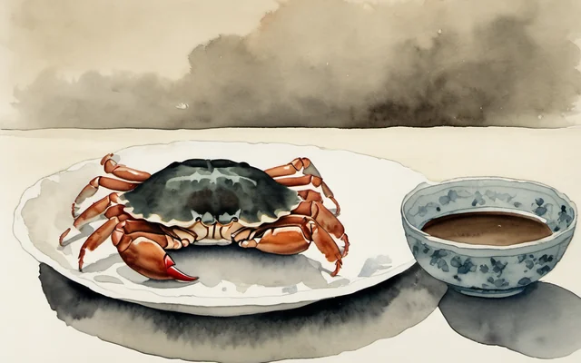
“秋风起，蟹脚痒；菊花开，闻蟹来。”秋分前后最肥美。
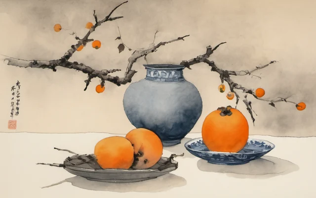
霜降吃柿子，寓意“事事如意”，甜到心里。
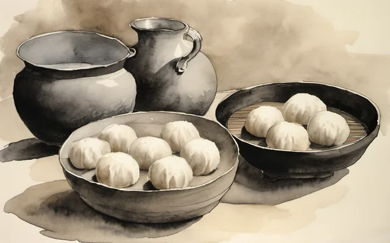
北方“冬至不端饺子碗，冻掉耳朵没人管”；南方吃汤圆，团团圆圆。